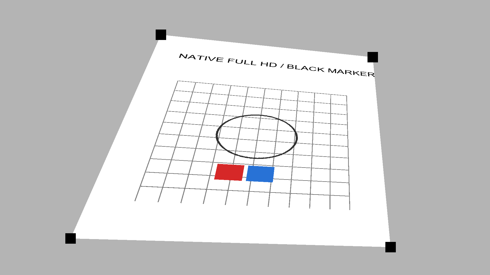
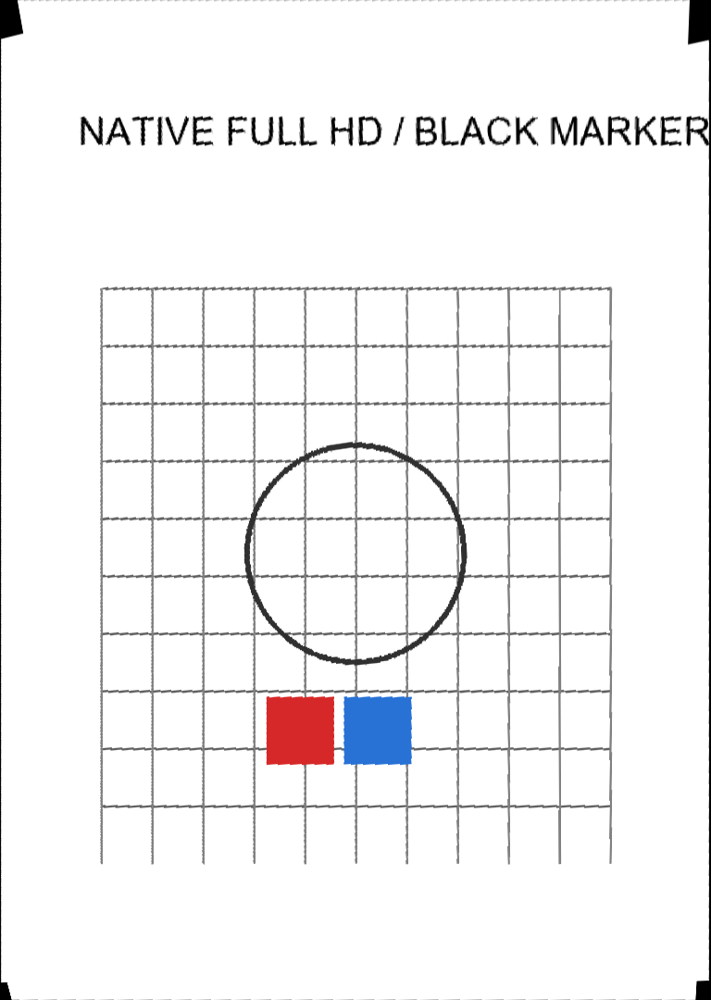

FPGA ENGINEERING REVIEW · 2026-10-18
V4S 黑色角标透视校正
最近一次实际烧录版本的完整源码、工程入口和验证资料。
短时基础功能可用 · 完整硬件验收尚未完成C / c-pipeline-next / 源码 a8c42b8 / 码流 3e3475d3
查看总 README · 打开 PDS 原生工程工程概览
1920 × 1080完整源图采集与DDR存储
765 × 1080有效校正结果，1080p居中显示
136 / 136原实现构建输入哈希一致
数据路径：相机 HDMI → 连续采集与黑标角点检测 → 双源bank/DDR → B单应性与透视坐标 → 四邻域缓存与插值 → 结果完整写回 → HDMI帧边界显示。
器件为PG2L100H -6 FBG676；使用PDS 2022.2-SP6.4。处理时钟约57.115 MHz，像素扫描时钟148.5 MHz。四个黑角标使用固定ROI，检测条件和限制见硬件说明。
生产RTL、厂商IP和约束按原字节保存，仅分类存放。所附sbit就是上次实际下载文件，未换成离线诊断副本。
建议审核顺序
可直接使用的入口
project/V4S_Review.pds
原生PDS工程，全部源文件用相对路径关联。
Test-Package.ps1
核对生产输入及完整交付文件。
Run-Simulation.ps1
运行快速或完整尺寸回归。
video_correct_ddr_top.sbit
已实测V4S码流；配套smsk缺失已明确记录。
按功能分类的完整源码
点击展开类别，可查看该类全部构建输入。原清单中的兼容模块保留，活动路径从顶层向下阅读。厂商受保护文件需相应工具和许可。
constraints/board_ddr.fdc 1 个文件
| 文件 | 模块 |
|---|---|
| board_ddr.fdc | 约束/厂商保护源码 |
ip/clock 2 个文件
| 文件 | 模块 |
|---|---|
| video_pll_27m_148m5.v | video_pll_27m_148m5 |
| config_pll_27m_10m.v | config_pll_27m_10m |
ip/ddr3 74 个文件
rtl/algorithm 8 个文件
| 文件 | 模块 |
|---|---|
| b_rectifier.v | b_rectifier |
| bilinear_interp.v | bilinear_interp |
| homography_solver.v | homography_solver |
| perspective_coord.v | perspective_coord |
| perspective_core.v | perspective_core |
| scaled_div_pipe.v | scaled_div_pipe |
| signed_div_seq.v | signed_div_seq |
| unsigned_div_seq.v | unsigned_div_seq |
rtl/cache 2 个文件
| 文件 | 模块 |
|---|---|
| ddr_pixel_cache.v | ddr_pixel_cache |
| ddr_quad_tile_cache.v | ddr_quad_tile_cache |
rtl/capture 7 个文件
| 文件 | 模块 |
|---|---|
| ddr_snapshot_capture.v | ddr_snapshot_capture |
| snapshot_capture.v | snapshot_capture |
| ddr_capture_writer.v | ddr_capture_writer, ddr_capture_writer_banked |
| continuous_capture_manager.v | continuous_capture_manager |
| continuous_capture_rx.v | continuous_capture_rx |
| continuous_capture_writer.v | continuous_capture_writer |
| continuous_source_path.v | continuous_source_path |
rtl/cdc 5 个文件
| 文件 | 模块 |
|---|---|
| reset_sync.v | reset_sync |
| async_packet_fifo.v | async_packet_fifo |
| ddr_command_bridge.v | ddr_command_bridge |
| async_packet_stream.v | async_packet_stream |
| quad_packet_bridge.v | quad_packet_bridge |
rtl/control 4 个文件
| 文件 | 模块 |
|---|---|
| frame_processor.v | frame_processor |
| frame_processor_stream.v | frame_processor_stream |
| c_stream_correction_path.v | c_stream_correction_path |
| c_stream_burst_correction_path.v | c_stream_burst_correction_path |
rtl/display 8 个文件
| 文件 | 模块 |
|---|---|
| ddr_result_display.v | ddr_result_display |
| result_display.v | result_display |
| video_timing_vtc.v | video_timing_vtc |
| rx_preview.v | rx_preview |
| status_overlay.v | status_overlay |
| rx_preview_stream.v | rx_preview_stream |
| frame_telemetry_overlay.v | frame_telemetry_overlay |
| ddr_result_display_block64.v | ddr_result_display_block64 |
rtl/geometry 5 个文件
| 文件 | 模块 |
|---|---|
| marker_detector.v | marker_detector |
| c_corner_rectifier.v | c_corner_rectifier |
| capture_geometry.v | capture_geometry |
| geometry_frame_join.v | geometry_frame_join |
| continuous_capture_geometry.v | continuous_capture_geometry |
rtl/hdmi 5 个文件
| 文件 | 模块 |
|---|---|
| hdmi_config.v | hdmi_config |
| iic_dri.v | iic_dri |
| ms7200_ctl.v | ms7200_ctl |
| ms7210_ctl.v | ms7210_ctl |
| hdmi_vs_recover.v | hdmi_vs_recover |
rtl/memory 9 个文件
| 文件 | 模块 |
|---|---|
| ddr_arbiter3.v | ddr_arbiter3 |
| ddr_result_writer.v | ddr_result_writer |
| ddr_self_test.v | ddr_self_test |
| ddr_word_engine.v | ddr_word_engine |
| ddr_result_writer_stream.v | ddr_result_writer_stream, stream_writer_async_fifo |
| ddr_result_writer_burst64.v | ddr_result_writer_burst64, burst64_async_fifo |
| ddr_word_engine_result_burst.v | ddr_word_engine_result_burst |
| ddr_arbiter3_fair.v | ddr_arbiter3_fair |
| ddr_arbiter3_turnaround.v | ddr_arbiter3_turnaround |
rtl/top 6 个文件
| 文件 | 模块 |
|---|---|
| frame_session.v | frame_session, frame_session_overlap |
| video_correct_ddr_core.v | video_correct_ddr_core |
| video_correct_ddr_top.v | video_correct_ddr_top |
| video_correct_ddr_stream_core.v | video_correct_ddr_stream_core |
| frame_session_overlap_stream.v | frame_session_overlap_stream |
| video_correct_ddr_continuous_core.v | video_correct_ddr_continuous_core |
验证结果与证据范围
| 项目 | 已有证据 | 范围 |
|---|---|---|
| 原V4S数字仿真 | 完整60图及坏角标保持/恢复 | 数字模型；不等同于实板60张新结果/秒 |
| 原物理时序 | 全部已约束时序满足 | 原最终报告，对应固定输入与约束 |
| 本次上板 | Program成功；用户确认校正页及短时更新可用 | 没有独立成功录像或实际帧率测量 |
| 整理后检查 | PDS编译、6图压力、原生3图和数值参考核验通过 | 检查回执；未重新布局或替换码流 |
曾出现DDR ALIGN ERROR，重新上电并重烧同一码流后恢复，根因尚未确认。缺配套smsk导致完整Verify未完成；长期稳定性、温升、真实新图速率、精确几何和镜头标定仍未验收。临时CRAM配置断电丢失。
合成回归示例
以下仅为数字仿真的输入与定点参考输出，不是实际相机出图或现场验收照片。

